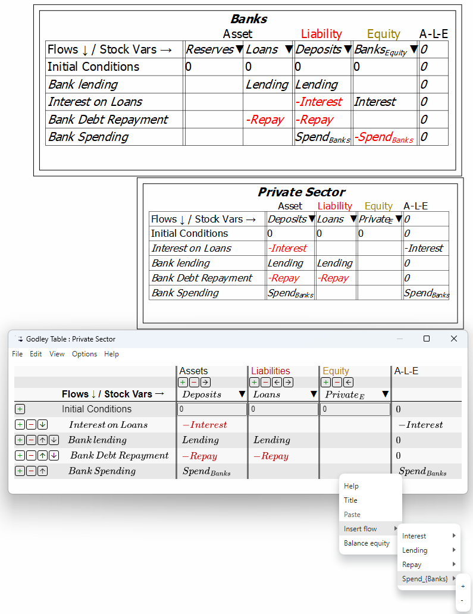
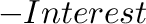
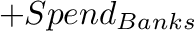

The Godley Table Form has a context menu which assists in the rapid completion of a multi-Godley-Table model. Entries can be copied from one cell and pasted into another, and Flows in the model can be inserted into a Godley Table cell as a positive or a negative entry:

It is also possible to record all as-yet-unclassified flows as additions to or subtractions from the Equity of the relevant sector—which is often (but not always) what is needed to complete a set of interlocking Godley Tables. In the figure above,

and
are shown in the checksum column. Choosing ``Balance equity''
from the context menu transfers both these entries to the Equity column.
checksum column. Choosing ``Balance equity''
from the context menu transfers both these entries to the Equity column.